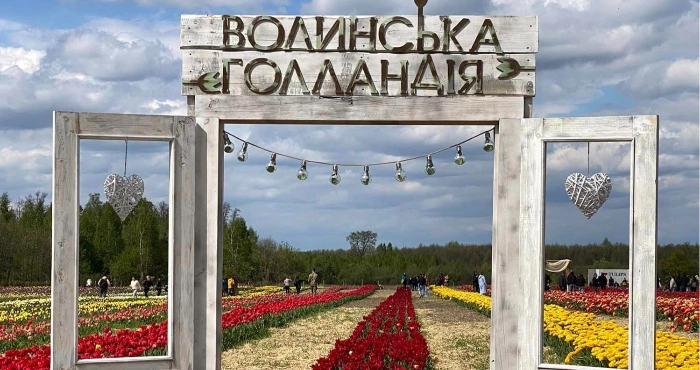
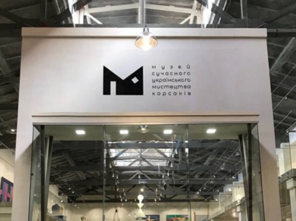
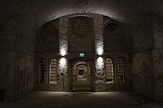

Волинська голандія
Волинська голандія - щорічний фестиваль квітів за 35км від адміністративного центру Волинської області - Луцька.
Проєкт який створено для того щоб люди змогли спокійно відпочити на природі, далеко від великих міст, де не має метушні та шуму. Сотні тисяч тюльпанів розквітають тут щорічно, радуючи і дорослих, і малих, що вирішили зупинитися в цьому краєвидному місці. Відвідування цього місця дозволяє багато кому зануритися у рефлексію, побути з собою на самоті, іншим воно допомагає зібратися всією сім'єю та провести час з близькими людьми.
Перед кожним фестевалем тут висаджуюють близько 300 тисяч нових цибулин тюльпанів, тому кількість квітів може досягати аж 1 мільйона екземплярів. На фестивалі, як зазвичай, є фотозони, футкорти, атракціони та жива музика. На цьому полі ростуть не лише тюльпани, коли їх фестиваль закінчується, квіти зрізають, а потім висаджують лаванду, та готуються до наступного фестивалю.
МСУМК
МУЗЕЙ СУЧАСНОГО УКРАЇНСЬКОГО МИСТЕЦТВА КОРСАКІВ - МІСЦЕ, ДЕ ЗУСТРІЧАЮТЬСЯ ЛЮДИ, ІДЕІ, МИСТЕЦТВО, ЩОБ СТВОРЮВАТИ МАЙБУТНЄ
Музей сучасного українського мистецтва Корсаків знаходиться у місті Луцьку, на території Культурно-розважального центру “Адреналін Сіті”. Урочисте відкриття відбулось 24 серпня 2018 року. Музей Корсаків створений з метою розвитку духовності нації, пропагування українського мистецтва у світі шляхом презентації яскравих творчих здобутків художньої культури XX століття, знайомства відвідувачів з сучасним мистецтвом через авторські проекти, інсталяції, перформанси. Фундатором та натхненником створення першого в Україні світового рівня музею сучасного українського мистецтва стала родина Корсаків.
Музей поставив перед собою цілі:
- Формування ґрунтовної колекції творів провідних українських митців та забезпечення постійного її поповнення
- Провадження ефективної виставкової діяльності з метою представлення творчих здобутків вітчизняних художників в Україні та за кордоном
- Організація науково-дослідницької роботи з метою пошуку нових, виявлення незнаних та повернення забутих імен українських художників до історії мистецтва
- Сприяння творчій діяльності українських митців та розвитку молодої генерації художників
- Створення простору для рефлексії, дискусій та пошуку істини, де відвідувачі будуть переживати унікальний естетичний досвід, здобувати натхнення та пізнавати мистецтво
Місто підземель
«Луцькі підземелля» — збірна назва підземних споруд в історичній частині Луцька. Зазвичай під ними маються на увазі підвали під кафедральним костелом і єзуїтським колегіумом, але менш відомі підземелля містяться і під іншими історичними будівлями.
Велика група підземель у Луцьку — це підземна частина давніх католицьких монастирських комплексів та православних церков, що використовувалася як підземні крипти та усипальниці, де ховали померле духовенство, представників влади та жертводавців (шляхту, багатих міщан тощо). За всю історію в Луцьку було більше 40 різних церков та монастирів (до початку 1990-х). Які розташовувалися якщо не на території нинішнього історико-культурного заповідника, то недалеко від нього.
Джерело: Підземний Луцьк